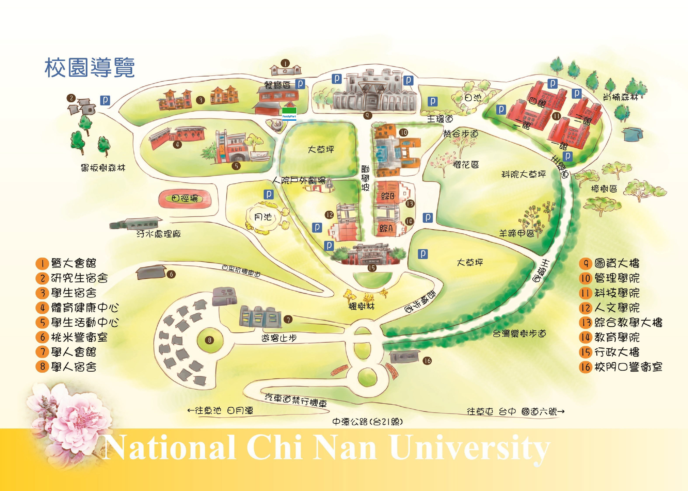

學校簡史（範例3）
國立暨南國際大學，簡稱暨南大學或暨大，是台灣南投縣唯一的一所國立大學，前身為清末設在南京的「暨南學堂」。暨大是臺灣國立大學系統系統成員校，現設有人文學院、管理學院、科技學院、教育學院、水沙連學院與護理暨健康福祉學院等六間學院。
中華民國政府遷台後，各方校友紛紛提出復校訴求，1984年，美國南加州暨大校友會雷博平會長應邀到台北會合徐亨、戴始仲二位學長一同代表暨大校友出席在總統府召開的僑務會議，提出在台復辦暨南大學的訴求。之後，海內外的暨大校友遊說台灣政界、教育界與文化界，後又直接訴請的行政院長郝柏村，在歷經多次失敗仍不斷努力奔走下，最終於1995年實現在台復校之願景。
江寧提學使陳伯陶為培養僑生的學堂，命名暨南，「暨南」二字取自書經禹貢篇：「朔南暨，聲教訖於四海」的含義，其意是要把中華文化向南方的海外傳播。早在1906年清末年設在南京的暨南學堂，及民國以後設在上海的暨南大學，皆以培育僑界人才為其傳統及特色。承襲「暨南」之名，即是希望延續此一使命。
